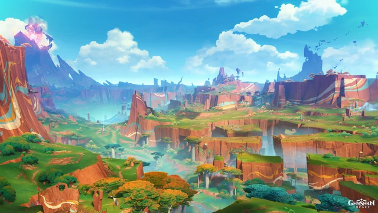

Natlan · Geography & Locations
Natlan: The Nation of War
Natlan is a Pyro nation organized around six tribes, their Saurian companions, and a history of resistance to the Abyss. Version 7.2 adds a Trial of Usurpation about war.

A six-tribe Pyro nation
Natlan is the Pyro nation organized as a federation of six tribes: the Children of Echoes, Scions of the Canopy, People of the Springs, Masters of the Night-Wind, Flower-Feather Clan, and Collective of Plenty. Pyro Archon Mavuika leads the modern federation; each tribe retains its own landscape, customs, and ties to a Saurian variety.
Natlan’s traditions are shaped by its conflicts with the Abyss, but the nation is not one uniform army. Tribal chronicles, Wayob traditions, Ancient Names, and the Night Kingdom each record different parts of its history and civic life.
The Pilgrimage and the Night Kingdom
The Pilgrimage of the Return of the Sacred Flame is a national tournament tied to Natlan’s selection of champions and, traditionally, its Pyro Archon. The Sacred Flame, Ancient Names, and Ode of Resurrection connect warriors and ancestral records to the Night Kingdom.
After the Archon Quest’s war ends, Mavuika’s Story Quest changes the Pilgrimage into an athletic competition and opens it to outsiders. This later reform changes the tournament’s role; it does not erase Natlan’s older tradition or merge the Pilgrimage with the separate Trial of Usurpation.
Mavuika’s trial: what is war?
Mavuika reaches the Lord of the Night and faces the Trial of Usurpation, whose topic is “War.” She describes war as the collective story held in Natlan’s Ancient Names: a record of sacrifices, departures, and what people made from the cost of victory.
The trial accepts her interpretation. The answer emphasizes that Natlan’s history belongs to its people and accumulated memories, rather than treating war as only a battle or a glorious title.
Natlan after the trial
The Version 7.2 World Quests Embers Never Fade and Born Toward the Flame show casualties, farewell rituals, and assistance from Sumeru and other allies. Mavuika says the Hallowing remains a threat as long as the Nail stays in the Night Kingdom.
The current story leaves the Night Kingdom, the Lord of the Night’s condition, and Natlan’s long-term recovery unresolved.
This is an original CoreGG reading guide, not an official HoYoverse article or a reproduction of the game text. Source links below identify the records used so you can check the original context.
Sources & references
Check these sources for the original game text and reference trail.